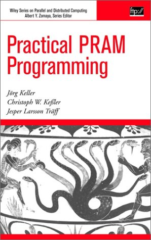
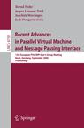
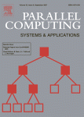
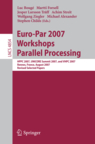
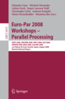
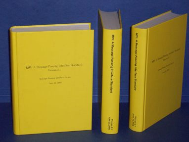
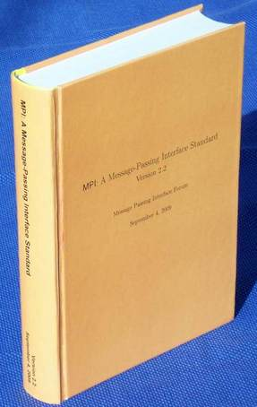
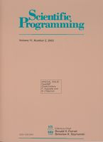
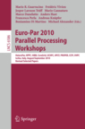

PEPPHER
PErformance Portability and Programmability of
HEterogeneous many-core aRchitectures.
Practically (as well as theoretically) efficient implementations of MPI, the
Message-Passing Interface,
for the NEC-Cray
SX-series, the
Earth Simulator, and other NEC
systems. This is done together with other members of the
NEC Laboratories Europe MPI Team.
Specifically, I work on regular and irregular collective communication
operations (broadcast, reductions, gather, scatter, alltoall, etc.),
MPI datatypes, MPI-2 one-sided communications, and MPI topology
functions for various interconnects, toplogies, and architectures, eg.
SMP-clusters with hierarhical communication systems. I am interested
in algorithms and implementations that are portable across a range of
architectures and interconnects. Since collective operations will also
be found (perhaps implicitly) in other, higher-level parallel
programming frameworks, this work has relevance beyond MPI.
I participate(d) in the MPI
Forum which has in 2008 and 2009 brought out consolidated
versions of the MPI standard (MPI 2.1 and MPI 2.2) and is now
discussing more wide ranging extensions to MPI (MPI 3.0).
Advanced computer architectures:
Multi-core parallelization:
- lock- and wait-free data structures
- work-stealing and other multi-core scheduling techniques
- self-adaptive parallel algorithms
- algorithmic library and interface support
Models of parallel computation. Design and implementation of parallel
algorithms. Algorithms support for parallel (communication)
libraries. Library and interface support for parallel programming.
Parallel programming languages. Experimental algorithmics. Graph
algorithms. Combinatorial optimization. Theory of
computation. Recursion theory. Computational complexity.
A Not So RECENT
Book: Practical PRAM Programming
A textbook (with
Jörg Keller and
Christoph W. Keßler)
on the PRAM, emulation of the PRAM in the hardware of the
SB-PRAM,
the PRAM programming language
FORK,
and the PRAM algorithms library
PAD,
published by Wiley, 2000.
(Co)edited stuff








University of Copenhagen, 1980-1989, mathematics, computer science
and assorted.
Degree in computer science (major, DIKU:
Datalogisk Institut, Københavns Universitet) and
mathematics (minor, indeed).
Master's Thesis (August 1989):
Memoization and its use in lazy and incremental program generation
(with Torben Amtoft);
supervisor:
Neil D. Jones.
PhD thesis (June 1995):
Distributed and parallel graph algorithms: models and experiments;
supervisor:
Jens Clausen.
Doctoral Dissertation (Danish: doktordisputats):
Aspects of the efficient implementation of the Message Passing Interface (MPI)
1990 to March 1992 at the now-defunct
European Computer-Industry Research Center (ECRC) in Munich.
1992 to January 1995 PhD student at
DIKU.
February 1995 to October 1997 Research Associate at the
Max-Planck-Institut für
Informatik in
Saarbrücken
in the
Algorithms and
Complexity Group (AG1) of
Kurt Mehlhorn.
November 1997 to July 1998 Research Associate at
Technische Universität München
at the Lehrstuhl für Effiziente Algorithmen of Ernst
Mayr.
Since August 1998 Research Staff at
NEC Laboratories Europe (formerly C&C Research Laboratories)
Best Marathon: 2.59:31 (Copenhagen, May 1994).
Best Halfmarathon: 1.25:23 (Saarbrücken, March 2000). Half-marathon in
Vienna 2010, 2011.
Very much non-speaking part in
Kolle - Ein Leben für Liebe und Sex
An up-to-date list of mainstream computer science publications
can be found in the
dblp computer science bibliography.
For citations (there are not many) use the
NEC Research Institute Citeseer.
Miscellaneous
-
Torben Amtoft and Jesper Larsson Träff.
Partial memoization for obtaining linear time behaviour of a 2DPDA.
Theoretical Computer Science, 98(2):347-356, May 1992.
-
Jesper Larsson Träff and Steven Prestwich.
Meta-programming for reordering literals in deductive databases.
In Proceedings of the 3rd international workshop on
Meta-programming in logic programming (META'92), volume 649 of Lecture
Notes in Computer Science, pages 280-293. Springer-Verlag, June 1992.
-
Jens Clausen and Jesper Larsson Träff.
Implementation of parallel branch-and-bound algorithms - experiences
with the graph partitioning problem.
Annals of Operations Research, 33:331-349, 1991.
-
Jens Clausen and Jesper Larsson Träff.
Do inherently sequential branch-and-bound algorithms exist?
Parallel Processing Letters, 4(1 & 2):3-13, 1994.
-
Jesper Larsson Träff.
Distributed, synchronized implementation of an algorithm for the
maximum flow problem.
In Proceedings of the 23rd International Conference on Parallel
Processing (ICPP'94), pages III-110-114, 1994.
-
Jesper Larsson Träff.
An experimental comparison of two distributed single-source shortest
path algorithms.
Parallel Computing, 21:1505-1532, 1995.
-
Jesper Larsson Träff.
A heuristic for blocking flow algorithms.
European Journal of Operational Research, 89(3):564-569, 1996.
-
Jyrki Katajainen and Jesper Larsson Träff.
A meticulous analysis of mergesort programs.
In Algorithms and Complexity (CIAC'97), volume 1203 of
Lecture Notes in Computer Science,
pages 217-229, 1997.
-
Jesper L. Träff and Christos D. Zaroliagis.
A simple parallel algorithm for the single-source
shortest path problem on planar digraphs.
Journal of Parallel and Distributed Computing, 60(9):1103-1124, 2000.
-
Gerth Stølting Brodal, Jesper Larsson Träff and
Christos D. Zaroliagis.
A Parallel Priority Queue with Constant Time Operations.
Journal of Parallel and Distributed Computing, 49:4-21, 1998.
-
Torben Hagerup, Peter Sanders and Jesper Larsson Träff.
An Implementation of the Binary Blocking Flow Algorithm.
In
2nd Workshop on Algorithm Engineering (WAE'98),
pages 143-154, 1998.
-
Peter Sanders and Jesper Larsson Jesper Larsson Träff.
The Hierarchical Factor Algorithm for All-to-all Communication.
In Euro-Par 2002 Parallel Processing, volume 2400 of
Lecture Notes in Computer Science, pages
799-803, 2002.
-
Irit Katriel, Peter Sanders and Jesper Larsson Träff.
A Practical Minimum Spanning Tree Algorithm using the Cycle Property.
In 11th European Symposium on Algorithms (ESA),
volume 2332 of Lecture Notes in Computer Science, pages
679-690, 2003.
-
Jesper Larsson Träff.
Direct Graph k-partitioning with a Kernighan-Lin like Heuristic.
Operations Research Letters, 34(6): 621-629, 2006.
-
Jesper Larsson Träff, Andreas Ripke.
Optimal Broadcast for fully connected Processor-node Networks.
Journal of Parallel and Distributed Computing, 68(7): 887-901, 2008.
-
Peter Sanders, Jochen Speck, Jesper Larsson Träff.
Two-Tree Algorithms for Full Bandwidth Broadcast, Reduction and Scan.
2008.
-
Jesper Larsson Träff.
Relationships between regular and irregular
collective communication operations on clustered multiprocessors.
Parallel Processing Letters, 2008.
-
Jesper Larsson Träff.
How to avoid making the same Mistakes all over again:
What the parallel-processing Community has (failed) to offer
the multi/many-core Generation.
In International Parallel and Distributed Processing Symposium (IPDPS),2008.
Message-Passing Interface (MPI) related
-
Jesper Larsson Träff.
Portable Randomized List Ranking on Multiprocessors using MPI.
In Recent Advances in Parallel Virtual Machine and
Message Passing Interface. 5th European PVM/MPI Users' Group Meeting,
volume 1497 of
Lecture Notes in Computer Science, pages 395-402, Springer 1998.
-
Jesper Larsson Träff, Rolf Hempel, Hubert Ritzdorf, Falk Zimmermann.
Flattening on the Fly: efficient handling of MPI derived datatypes.
In Recent Advances in Parallel Virtual Machine and
Message Passing Interface. 6th European PVM/MPI Users' Group Meeting,
volume 1697 of
Lecture Notes in Computer Science, pages 109-116, Springer 1999.
-
Ralf Reussner, Jesper Larsson Träff, Gunnar Hunzelmann.
A Benchmark for MPI Derived Datatypes.
In Recent Advances in Parallel Virtual Machine and
Message Passing Interface. 7th European PVM/MPI Users' Group Meeting,
volume 1908 of
Lecture Notes in Computer Science, pages 10-17, Springer 2000.
-
Jesper Larsson Träff, Hubert Ritzdorf, Rolf Hempel.
The Implementation of MPI-2 One-Sided Communication for the NEC SX-5.
Supercomputing 2000.
-
Maciej Golebiewski, Jesper Larsson Träff.
MPI-2 One-sided Communications on a Giganet SMP Cluster.
In Recent Advances in Parallel Virtual Machine and
Message Passing Interface. 8th European PVM/MPI Users' Group Meeting,
volume 2131 of Lecture Notes in Computer Science, pages
16-23, Springer 2001.
-
Jesper Larsson Träff.
Implementing the MPI Process Topology Mechanism.
Supercomputing 2002.
Joachim Worringen, Jesper Larsson Träff, Hubert Ritzdorf.
Improving Generic Non-Contiguous File Access for MPI-IO.
In Recent Advances in Parallel Virtual Machine and
Message Passing Interface. 10th European PVM/MPI Users' Group Meeting,
volume 2840 of Lecture Notes in Computer Science, pages
309-318, Springer 2003.
-
Joachim Worringen, Jesper Larsson Träff, Hubert Ritzdorf.
Fast Parallel Non-contiguous File Access.
Supercomputing 2003.
-
Jesper Larsson Träff, Joachim Worringen.
Verifying Collective MPI Calls.
In Recent Advances in Parallel Virtual Machine and
Message Passing Interface. 11th European PVM/MPI Users' Group Meeting,
volume 3241 of Lecture Notes in Computer Science, pages
18-27, Springer 2004.
-
Jesper Larsson Träff.
An improved Algorithm for (non-commutative) Reduce-scatter
with an Application.
In Recent Advances in Parallel Virtual Machine and
Message Passing Interface. 12th European PVM/MPI Users' Group Meeting,
volume 3666 of Lecture Notes in Computer Science, pages
129-137, Springer 2005.
-
Hubert Ritzdorf, Jesper Larsson Träff.
Collective Operations in NEC's High-performance MPI Libraries.
In International Parallel and Distributed Processing Symposium (IPDPS),page 100, 2006.
-
Jesper Larsson Träff, William Gropp, Rajeev Thakur.
Self-consistent MPI Performance Requirements.
In Recent Advances in Parallel Virtual Machine and
Message Passing Interface. 14th European PVM/MPI Users' Group Meeting,
volume 4757 of Lecture Notes in Computer Science, pages
36-45, Springer 2007.
-
Jesper Larsson Träff, Andreas Ripke, Christian Siebert,
Pavan Balaji, Rajeev Thakur, William Gropp.
A Simple, Pipelined Algorithm for Large, Irregular All-gather Problems.
In Recent Advances in Parallel Virtual Machine and
Message Passing Interface. 15th European PVM/MPI Users' Group Meeting,
volume 5205, of
Lecture Notes in Computer Science, pages 84-93. Springer, 2008.
-
Faisal Ghias Mir, Jesper Larsson Träff.
Constructing MPI input-output Datatypes for efficient Transpacking.
In Recent Advances in Parallel Virtual Machine and
Message Passing Interface. 15th European PVM/MPI Users' Group Meeting,
volume 5205, of
Lecture Notes in Computer Science, pages 141-150. Springer, 2008.
Library of PRAM Algorithms and Data structures
Page created sometime in 1996 by Jesper Larsson Träff,
his own (web)master. Last serious update: July 4th, 2008.